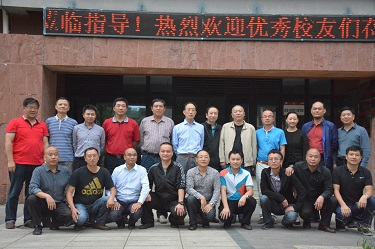

资源与环境工程学院校友分会筹备会顺利召开
资环网讯（新闻中心 崔俊丽 报道|摄影 赵亦婷）2015年9月13日下午15:00，我院校友会筹备会在西区资环楼405会议室召开， 院长吴攀、副院长周丕康、副会长兼副秘书长鲁迟，以及十多位优秀校友列席本次会议，会议由我院副院长兼副秘书长陈筠主持。
我院自成立以来，众多优秀校友活跃在各个领域，成为了行业的精英和领袖人物，为国家经济建设和社会发展做出了积极的贡献，为母校赢得了广泛的美誉。 会议伊始，陈筠副院长请到会嘉宾一一作了自我介绍。然后，吴攀院长介绍了学院情况及校友会筹备情况。 我院源于1958年建立的贵州工学院地质系，历经贵州工学院资源工程系、贵州工业大学资源与环境学院，2004年8月与原贵州工业大学化生学院的环境工程专业和原贵州大学的环境科学系合并而成。 吴院长还介绍了我院的师资力量、本科生及研究生的学科专业发展和学术科研等情况。同时，他还介绍了校友会成立的意义及机构设置，明确学院校友会的组织结构，负责人员的产生办法，为校友会今后工作的开展奠定了制度基础。 此外，陈筠副院长汇报了校友会筹备的具体内容，包括校友会成立筹备工作、校友系列活动的征集、方案策划与日程安排、校友通讯期刊的策划、校友通讯录的制定、校友网站的建设等。
接下来，优秀院友们依次发言，他们纷纷表示成立我院校友会是众望所归，通过校友会这样的组织来整合学院的校友资源，扩大学院的社会影响力，竭力为学院和母校今后的发展贡献力量。 最后，与会人员积极讨论并商定校友会相关事宜，包括商定首届校友会组织机构成员；确定校友会成立大会时间；讨论《贵州大学资源与环境工程学院校友会章程》相关具体细节，力争将工作具体落实，责任到人，保证校友会工作的顺利开展和有序进行。

下午近18时，筹备会议圆满结束。此次筹备会议旨在增进交流加强沟通，将校友工作正式纳入到学院发展的总体规划中。 同时，我院校友会的成立将为广大校友们提供一个优质的交互平台，立足于校友间的了解与信任，促进校友间的合作与发展。
【责任编辑：王生林】